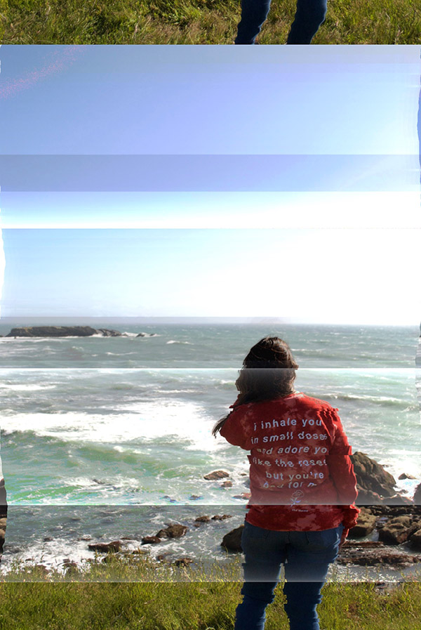

"How Do You Feel?", Glitch Art, Digital Image, 2018
The idea for this glitch art piece came from my favorite bands latest album. I had taken a trip to the town where they recorded the album, Gualala, CA, and that is where this photo was taken. I glitched this image using a program online and I based the glitch on how the song made me feel.
"Do You Follow Me?", Video, 1:12, 2018
My concept for this video was about social media and social media influencers and how much we depend and are influenced by social media. When we are walking and looking at our phones, we aren't really paying attention to stuff around us either, so things around us seem to be going by fast. We are walking and too busy paying attention to our social media accounts trying to catch up on the latest trends, new drama, and even reading about news headlines. We depend on social media for everything and social media icons as well.
"Lets Get Spooky", Sound, 2018
With Halloween being my favorite holiday, I wanted to make a sound piece that gave an eerie vibe while listening to it.
"Myspace", Interactive Net Art, 2018
Myspace was a major thing for me back in the early 2000s. I would go on Myspace almost every day after school and spend so much time on there talking to friends, listening to music, and making sure my profile looked as cool as it could get.I wanted to create that sense of nostalgia and make it look like a myspace page that either I would create or a "typical" myspace page back then.
click here for full website
"Space Pixels", Interactive Net Art, 2018
My inspiration for this project was old video games, such as classic Nintendo video games. I chose to make it with all pixel images to give it that 8 bit/video game vibe.
click here for full website